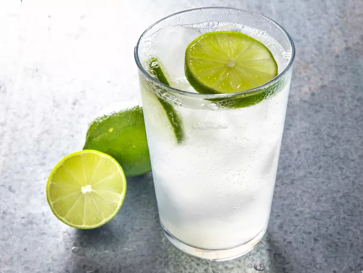

Lemon Soda

Description
This bitter lemon drink is very much like Krest Bitter Lemon (found in Africa) or Schweppes Bitter Lemon (found in Europe). Unfortunately, there is nothing comparable found in the USA, but this comes pretty darn close! This is the perfect thirst quencher for a blistering hot day!
Ingredients
- 1 ½ cups white sugar
- 1 ½ cups water
- 1 lemon, zested
- 2 sprigs fresh lavender
- 3 cups lemon juice
- 4 cups ice cubes, or as needed
- 1 (11 fluid ounce) bottle cold tonic water, or more as needed
Steps
- Combine sugar, water, lemon zest, and lavender in a pot and cover; bring to a boil. Cook mixture until sugar is dissolved, 5 to 10 minutes. Remove the pot from heat and cool syrup to room temperature, about 15 minutes.
- Pour lemon juice into a pitcher. Strain syrup into lemon juice and stir until concentrate is evenly mixed. Refrigerate concentrate until chilled, at least 1 hour.
- Fill serving glasses with ice. Pour about 2 ounces concentrate into each glass; top with tonic water and stir.